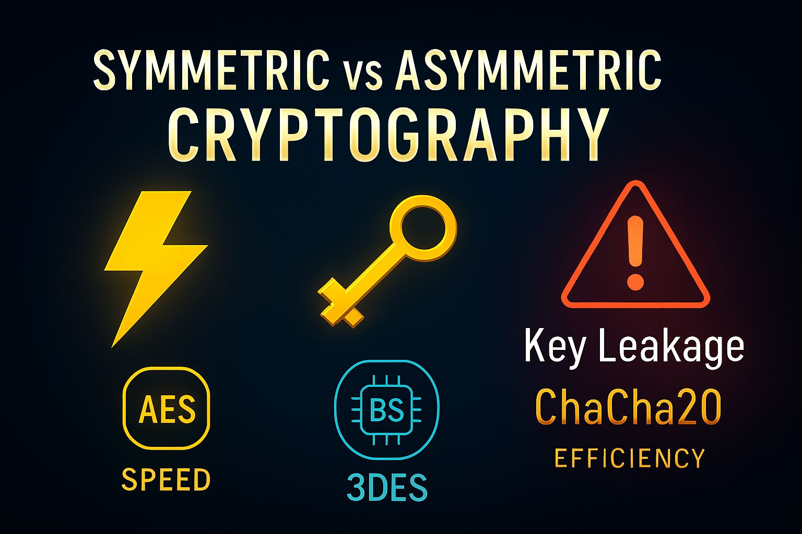
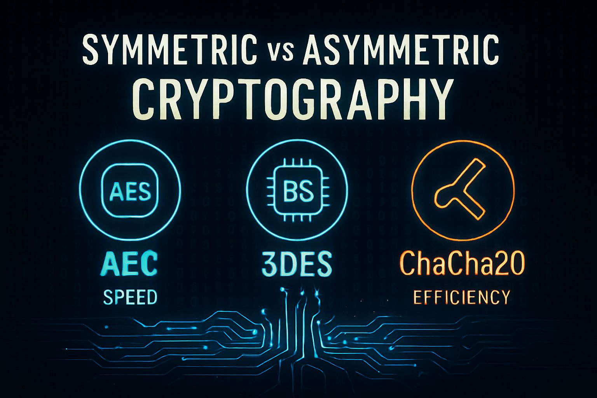

f7890abcdef";
const encrypted = aes.encrypt(sensitiveData, randomKey);
console.log("Encrypted:", encrypted);
const decrypted = aes.decrypt(encrypted, randomKey);
console.log("Decrypted:", decrypted);
// Method 2: Using password-derived key
const password = "MySecurePassword123!";
const salt = crypto.randomBytes(32); // Always use random salt
const derivedKey = aes.deriveKeyFromPassword(password, salt);
const encryptedWithPassword = aes.encrypt(sensitiveData, derivedKey);
console.log("Password-encrypted:", encryptedWithPassword);
// Demonstrate secure key storage (conceptual)
class SecureKeyManager {
constructor() {
this.keys = new Map();
this.keyMetadata = new Map();
}
storeKey(keyId, key, metadata = {}) {
// In production, keys would be stored in secure hardware or key management service
this.keys.set(keyId, key);
this.keyMetadata.set(keyId, {
...metadata,
createdAt: new Date(),
accessCount: 0
});
}
retrieveKey(keyId) {
const key = this.keys.get(keyId);
if (key) {
const metadata = this.keyMetadata.get(keyId);
metadata.accessCount++;
metadata.lastAccessed = new Date();
return key;
}
throw new Error('Key not found');
}
rotateKey(keyId) {
// Key rotation for enhanced security
const oldKey = this.keys.get(keyId);
if (oldKey) {
const newKey = aes.generateKey();
this.storeKey(keyId, newKey, { rotatedFrom: oldKey.toString('hex').substring(0, 8) });
return newKey;
}
throw new Error('Key not found for rotation');
}
}
Triple DES (3DES)
Triple DES, or 3DES, was developed as an interim solution to address the security vulnerabilities of the original DES. By applying DES encryption three times with different keys, 3DES effectively increases the key space and provides enhanced security. However, its slower performance compared to AES has led to its gradual phase-out in favor of more modern algorithms.
ChaCha20, developed by Daniel J. Bernstein, represents a newer approach to stream cipher design. It offers excellent security properties and performance, particularly on mobile and embedded devices where AES hardware acceleration may not be available. ChaCha20 is increasingly adopted in modern protocols, including TLS 1.3 and the Signal messaging protocol.
ChaCha20 Advantages
Software Performance: Excellent performance on platforms without AES hardware acceleration
Constant-Time Operation: Designed to resist timing attacks
Simplicity: Relatively simple implementation reduces the risk of bugs
Cryptographic Security: Strong resistance to known attacks

Performance Characteristics and Benchmarking
Understanding the performance characteristics of different symmetric algorithms is crucial for making informed decisions in system design. The following analysis provides comprehensive benchmarking data and performance considerations.
Algorithm Performance Comparison
Algorithm
Key Size (bits)
Block Size (bits)
Throughput (MB/s)*
Memory Usage
Hardware Support
AES-128
128
128
1,200-4,000
Low
Extensive
AES-256
256
128
800-3,200
Low
Extensive
3DES
192
64
45-100
Medium
Legacy
ChaCha20
256
N/A (Stream)
600-1,500
Low
Limited
*Performance varies significantly based on hardware, implementation, and whether hardware acceleration is available
Security Considerations and Best Practices
Key Management
Proper key management represents perhaps the most critical aspect of symmetric cryptography implementation. Even the strongest algorithm becomes vulnerable if keys are poorly managed.
Critical Key Management Principles
Key Generation: Always use cryptographically secure random number generators
Key Storage: Never store keys in plain text; use secure key management systems
Key Distribution: Employ secure channels for key distribution (out-of-band methods preferred)
Key Rotation: Regularly rotate keys to limit exposure from potential compromises
Key Destruction: Securely destroy keys when they're no longer needed
// Advanced Key Management Implementation
class EnterpriseKeyManager {
constructor() {
this.keyStore = new Map();
this.keyPolicies = new Map();
this.auditLog = [];
}
// Generate key with policy enforcement
generateKey(keyId, policy = {}) {
const defaultPolicy = {
algorithm: 'aes-256-gcm',
maxAge: 30 * 24 * 60 * 60 * 1000, // 30 days
maxOperations: 1000000,
rotationThreshold: 0.8
};
const keyPolicy = { ...defaultPolicy, ...policy };
// Generate cryptographically secure key
const key = crypto.randomBytes(32); // 256-bit key
const keyMetadata = {
id: keyId,
key: key,
policy: keyPolicy,
createdAt: new Date(),
operationCount: 0,
lastUsed: new Date(),
status: 'active'
};
this.keyStore.set(keyId, keyMetadata);
this.keyPolicies.set(keyId, keyPolicy);
this.auditLog.push({
action: 'KEY_GENERATED',
keyId: keyId,
timestamp: new Date(),
metadata: { algorithm: keyPolicy.algorithm }
});
return keyId;
}
// Retrieve key with policy checks
getKey(keyId, operation = 'encrypt') {
const keyData = this.keyStore.get(keyId);
if (!keyData) {
throw new Error(`Key ${keyId} not found`);
}
// Check key status
if (keyData.status !== 'active') {
throw new Error(`Key ${keyId} is not active`);
}
// Check age policy
const age = Date.now() - keyData.createdAt.getTime();
if (age > keyData.policy.maxAge) {
throw new Error(`Key ${keyId} has exceeded maximum age`);
}
// Check operation count policy
if (keyData.operationCount >= keyData.policy.maxOperations) {
throw new Error(`Key ${keyId} has exceeded maximum operations`);
}
// Update usage statistics
keyData.operationCount++;
keyData.lastUsed = new Date();
// Check if rotation is needed
const operationRatio = keyData.operationCount / keyData.policy.maxOperations;
const ageRatio = age / keyData.policy.maxAge;
if (operationRatio >= keyData.policy.rotationThreshold ||
ageRatio >= keyData.policy.rotationThreshold) {
this.scheduleKeyRotation(keyId);
}
this.auditLog.push({
action: 'KEY_ACCESSED',
keyId: keyId,
operation: operation,
timestamp: new Date()
});
return keyData.key;
}
// Automated key rotation
scheduleKeyRotation(keyId) {
const keyData = this.keyStore.get(keyId);
if (!keyData) return;
// Generate new key with same policy
const newKeyId = keyId + '_v' + Date.now();
this.generateKey(newKeyId, keyData.policy);
// Mark old key for deprecation
keyData.status = 'deprecated';
this.auditLog.push({
action: 'KEY_ROTATION_SCHEDULED',
oldKeyId: keyId,
newKeyId: newKeyId,
timestamp: new Date()
});
return newKeyId;
}
// Secure key destruction
destroyKey(keyId) {
const keyData = this.keyStore.get(keyId);
if (keyData) {
// Overwrite key data with random bytes (defense against memory dumps)
keyData.key.fill(0);
crypto.randomFillSync(keyData.key);
keyData.status = 'destroyed';
this.auditLog.push({
action: 'KEY_DESTROYED',
keyId: keyId,
timestamp: new Date()
});
}
}
// Generate audit report
generateAuditReport(startDate, endDate) {
return this.auditLog.filter(entry =>
entry.timestamp >= startDate && entry.timestamp <= endDate
).map(entry => ({
...entry,
timestamp: entry.timestamp.toISOString()
}));
}
}
Mode of Operation Considerations
The mode of operation determines how a block cipher processes data larger than a single block. The choice of mode significantly impacts both security and performance characteristics.
Mode
Security Level
Parallelizable
Padding Required
Best Use Cases
ECB
Low (Not Recommended)
Yes
Yes
None (Deprecated)
CBC
Medium-High
Decrypt Only
Yes
File Encryption
GCM
Very High
Yes
No
Network Communications
CTR
High
Yes
No
Real-time Streaming
Hands-On Implementation Exercise
Let's implement a comprehensive file encryption system that demonstrates best practices in symmetric cryptography:
// Professional File Encryption System
const crypto = require('crypto');
const fs = require('fs').promises;
const path = require('path');
class SecureFileEncryption {
constructor() {
this.algorithm = 'aes-256-gcm';
this.keyLength = 32; // 256 bits
this.ivLength = 12; // 96 bits for GCM
this.tagLength = 16; // 128 bits authentication tag
this.saltLength = 32; // 256 bits for key derivation
this.iterations = 100000; // PBKDF2 iterations
}
// Derive key from password using PBKDF2
async deriveKey(password, salt) {
return new Promise((resolve, reject) => {
crypto.pbkdf2(password, salt, this.iterations, this.keyLength, 'sha256', (err, key) => {
if (err) reject(err);
else resolve(key);
});
});
}
// Encrypt file with authenticated encryption
async encryptFile(inputPath, outputPath, password) {
try {
// Read input file
const plaintext = await fs.readFile(inputPath);
// Generate random salt and IV
const salt = crypto.randomBytes(this.saltLength);
const iv = crypto.randomBytes(this.ivLength);
// Derive key from password
const key = await this.deriveKey(password, salt);
// Create cipher
const cipher = crypto.createCipher(this.algorithm, key, { iv });
// Encrypt data
const encrypted = Buffer.concat([
cipher.update(plaintext),
cipher.final()
]);
// Get authentication tag
const tag = cipher.getAuthTag();
// Create file header with metadata
const header = Buffer.alloc(4 + 4 + 4); // version + salt_len + iv_len
header.writeUInt32BE(1, 0); // Version
header.writeUInt32BE(this.saltLength, 4);
header.writeUInt32BE(this.ivLength, 8);
// Combine all components
const output = Buffer.concat([
header,
salt,
iv,
tag,
encrypted
]);
// Write encrypted file
await fs.writeFile(outputPath, output);
return {
success: true,
originalSize: plaintext.length,
encryptedSize: output.length,
overhead: output.length - plaintext.length
};
} catch (error) {
throw new Error(`Encryption failed: ${error.message}`);
}
}
// Decrypt file with authentication verification
async decryptFile(inputPath, outputPath, password) {
try {
// Read encrypted file
const encrypted = await fs.readFile(inputPath);
let offset = 0;
// Parse header
const version = encrypted.readUInt32BE(offset);
offset += 4;
if (version !== 1) {
throw new Error('Unsupported file version');
}
const saltLength = encrypted.readUInt32BE(offset);
offset += 4;
const ivLength = encrypted.readUInt32BE(offset);
offset += 4;
// Extract components
const salt = encrypted.slice(offset, offset + saltLength);
offset += saltLength;
const iv = encrypted.slice(offset, offset + ivLength);
offset += ivLength;
const tag = encrypted.slice(offset, offset + this.tagLength);
offset += this.tagLength;
const ciphertext = encrypted.slice(offset);
// Derive key from password
const key = await this.deriveKey(password, salt);
// Create decipher
const decipher = crypto.createDecipher(this.algorithm, key, { iv });
decipher.setAuthTag(tag);
// Decrypt data
const plaintext = Buffer.concat([
decipher.update(ciphertext),
decipher.final()
]);
// Write decrypted file
await fs.writeFile(outputPath, plaintext);
return {
success: true,
decryptedSize: plaintext.length
};
} catch (error) {
throw new Error(`Decryption failed: ${error.message}`);
}
}
// Secure file shredding (multiple overwrites)
async secureDelete(filePath) {
try {
const stats = await fs.stat(filePath);
const fileSize = stats.size;
// Multiple overwrite passes
const patterns = [
Buffer.alloc(fileSize, 0x00), // Zeros
Buffer.alloc(fileSize, 0xFF), // Ones
crypto.randomBytes(fileSize) // Random
];
for (const pattern of patterns) {
await fs.writeFile(filePath, pattern);
await fs.fsync(filePath); // Force write to disk
}
// Finally delete the file
await fs.unlink(filePath);
return { success: true, message: 'File securely deleted' };
} catch (error) {
throw new Error(`Secure deletion failed: ${error.message}`);
}
}
}
// Usage demonstration
async function demonstrateFileEncryption() {
const encryptor = new SecureFileEncryption();
const testFile = 'sensitive_document.txt';
const encryptedFile = 'sensitive_document.enc';
const decryptedFile = 'sensitive_document_recovered.txt';
const password = 'MyVerySecurePassword123!';
try {
// Create test file
await fs.writeFile(testFile, 'This is sensitive information that needs to be encrypted securely.');
// Encrypt file
console.log('Encrypting file...');
const encResult = await encryptor.encryptFile(testFile, encryptedFile, password);
console.log('Encryption result:', encResult);
// Decrypt file
console.log('Decrypting file...');
const decResult = await encryptor.decryptFile(encryptedFile, decryptedFile, password);
console.log('Decryption result:', decResult);
// Verify content
const original = await fs.readFile(testFile, 'utf8');
const recovered = await fs.readFile(decryptedFile, 'utf8');
console.log('Content verification:', original === recovered ? 'PASSED' : 'FAILED');
// Clean up
await encryptor.secureDelete(testFile);
await encryptor.secureDelete(decryptedFile);
} catch (error) {
console.error('Demonstration failed:', error.message);
}
}
// Run demonstration
demonstrateFileEncryption().catch(console.error);
Key Takeaways from Symmetric Cryptography
Speed and Efficiency: Symmetric algorithms are significantly faster than asymmetric algorithms
Key Management Challenge: The primary weakness is secure key distribution and management
Perfect for Bulk Data: Ideal for encrypting large amounts of data efficiently
Authentication Integration: Modern modes like GCM provide both confidentiality and authenticity
Hardware Acceleration: Many platforms provide dedicated hardware support for algorithms like AES
Symmetric Cryptography in Blockchain Context
In blockchain and Web3 applications, symmetric cryptography plays several crucial roles:
Transaction Data Encryption
While blockchain transactions are typically public, symmetric encryption is often used for:
Private Transactions: Zero-knowledge protocols often use symmetric encryption for data confidentiality
Off-chain Data Storage: Sensitive data referenced by smart contracts but stored off-chain
Communication Channels: Secure communication between blockchain nodes and clients
Welcome to the first foundational lesson of the Web3 Odyssey course! In this comprehensive exploration, we will dive deep into the cryptographic principles that form the bedrock of blockchain technology and decentralized systems. Cryptography is not merely a theoretical concept—it is the invisible force that secures our digital transactions, protects our privacy, and enables trust in trustless environments.
The distinction between symmetric and asymmetric cryptography represents one of the most fundamental concepts in modern computer security. Understanding these paradigms is crucial for anyone seeking to build, analyze, or work with Web3 technologies. From securing wallet communications to validating smart contract transactions, these cryptographic methods are woven into every aspect of the decentralized web.
What is Cryptography?
Cryptography, derived from the Greek words "kryptos" (hidden) and "graphein" (to write), is the science of securing information through mathematical algorithms and protocols. In the digital age, cryptography serves multiple critical functions:
Confidentiality: Ensuring that sensitive information remains private and inaccessible to unauthorized parties
Integrity: Guaranteeing that data has not been altered or tampered with during transmission or storage
Authentication: Verifying the identity of parties involved in communication or transactions
Non-repudiation: Preventing parties from denying their participation in a transaction or communication
Authorization: Controlling access to resources and ensuring only authorized users can perform specific actions
In the context of Web3 and blockchain technology, these cryptographic principles enable the creation of decentralized systems that operate without centralized authorities while maintaining security and trust.
Learning Objectives
By the end of this lesson, you will have achieved a comprehensive understanding of:
Symmetric Cryptography Mastery: Understand the fundamental principles, algorithms, and practical applications of symmetric encryption, including hands-on implementation experience with industry-standard algorithms like AES-256
Asymmetric Cryptography Expertise: Grasp the mathematical foundations of public-key cryptography, explore RSA and elliptic curve algorithms, and understand how these systems solve the key distribution problem
Comparative Analysis Skills: Develop the ability to evaluate and compare different cryptographic approaches, understanding when and why to use each method in various scenarios
Blockchain Integration Knowledge: Learn how both symmetric and asymmetric cryptography are integrated into blockchain protocols, smart contracts, and Web3 applications
Security Implementation: Gain practical experience implementing cryptographic solutions and understanding common security pitfalls and best practices
Performance Optimization: Understand the performance implications of different cryptographic choices and how to optimize for various use cases
Real-World Relevance in Web3
The concepts we explore in this lesson have immediate and profound relevance to the Web3 ecosystem. Consider these real-world applications:
Ethereum Transaction Security
Every Ethereum transaction combines both symmetric and asymmetric cryptography. The transaction data may be encrypted using symmetric algorithms for efficiency, while the transaction signature uses elliptic curve digital signatures (asymmetric) to prove ownership and prevent tampering.
Decentralized Identity (DID)
Self-sovereign identity systems rely heavily on asymmetric cryptography to enable individuals to control their own digital identities without depending on centralized authorities. Public-private key pairs become the foundation of verifiable credentials and attestations.
Layer 2 Privacy Solutions
Zero-knowledge proofs and other privacy-preserving technologies in Layer 2 solutions often combine symmetric encryption for data privacy with asymmetric cryptography for identity verification and proof generation.
Course Roadmap
Our journey through cryptographic fundamentals follows this carefully structured path:
🔑Symmetric Cryptography Deep Dive
Historical evolution from Caesar ciphers to modern AES
Mathematical foundations and algorithm internals
Key management challenges and solutions
Performance characteristics and optimization techniques
Practical implementation in Node.js with security considerations
🗝️Asymmetric Cryptography Exploration
The revolutionary concept of public-key cryptography
RSA algorithm: from mathematical theory to practical implementation
Elliptic Curve Cryptography: the backbone of modern blockchain
Digital signatures and their role in blockchain consensus
Key generation, storage, and lifecycle management
🌍Blockchain and Web3 Integration
How Bitcoin uses cryptographic hash functions and digital signatures
Ethereum's approach to account-based cryptography
Smart contract security and cryptographic best practices
Cross-chain communication and cryptographic bridging
Privacy coins and advanced cryptographic techniques
🛠️Hands-On Implementation
Building a secure message encryption system
Creating and verifying digital signatures
Implementing a basic blockchain transaction system
Security auditing and vulnerability assessment
Performance benchmarking and optimization
Prerequisites and Preparation
To maximize your learning experience in this lesson, we recommend:
Basic Programming Knowledge: Familiarity with JavaScript/Node.js will be helpful for code examples, though all concepts will be explained thoroughly
Mathematical Foundation: Understanding of basic algebra and number theory will enhance comprehension of cryptographic algorithms
Curiosity and Critical Thinking: An inquisitive mindset ready to explore complex topics and ask "why" and "how" questions
Practical Orientation: Willingness to experiment with code examples and hands-on exercises
Don't worry if you're new to cryptography—we'll build knowledge progressively, starting with fundamental concepts and advancing to sophisticated implementations.
Learning Methodology
This lesson employs a multi-modal learning approach designed to accommodate different learning styles:
Visual Learning: Comprehensive diagrams, flowcharts, and algorithm visualizations
Theoretical Understanding: In-depth explanations of mathematical principles and cryptographic theory
Practical Application: Hands-on coding exercises and real-world implementation examples
Comparative Analysis: Side-by-side comparisons and decision matrices
Assessment and Reflection: Interactive quizzes and thought-provoking questions
Each section builds upon previous knowledge while introducing new concepts in a logical progression. Take your time to fully understand each concept before moving forward—cryptography rewards careful study and deep understanding.
Ready to Begin?
You're about to embark on a fascinating journey into the mathematical foundations that secure our digital world. The concepts you learn here will serve as building blocks for understanding advanced blockchain protocols, smart contract security, and the entire Web3 ecosystem. Let's dive in!
🔑Symmetric Cryptography: The Foundation of Secure Communication
Fundamental Principles and Theory
Symmetric cryptography, also known as secret-key cryptography or private-key cryptography, represents one of humanity's oldest and most intuitive approaches to securing information. The fundamental principle is elegantly simple: the same key is used for both encryption and decryption processes. This shared secret forms the foundation of symmetric cryptographic systems and defines their primary characteristics.
The mathematical representation of symmetric encryption can be expressed as:
Encryption: C = E(K, P) where C is ciphertext, E is the encryption function, K is the key, and P is plaintext
Decryption: P = D(K, C) where D is the decryption function
Key Property: D(K, E(K, P)) = P (the decryption of encrypted plaintext returns the original plaintext)
This mathematical elegance, however, introduces the central challenge of symmetric cryptography: the key distribution problem. How do two parties who wish to communicate securely share the secret key without that key being intercepted by adversaries? This question has driven centuries of cryptographic innovation and remains relevant in modern digital communications.
Historical Context and Evolution
The history of symmetric cryptography spans millennia, from ancient substitution ciphers to modern computer-based algorithms. Understanding this evolution provides crucial context for appreciating current cryptographic systems.
Ancient Foundations
The earliest known symmetric ciphers date back to ancient civilizations. The Caesar cipher, attributed to Julius Caesar around 50 BCE, exemplifies the substitution cipher approach. Each letter in the plaintext is shifted a fixed number of positions in the alphabet. While trivially simple by modern standards, it demonstrates the core principle of transformation using a shared secret (the shift value).
The medieval period saw the development of more sophisticated substitution ciphers, including the Vigenère cipher (developed in the 16th century). This polyalphabetic cipher used a keyword to create multiple substitution alphabets, significantly increasing security compared to monoalphabetic ciphers like Caesar.
Industrial Age Innovations
The 19th and early 20th centuries brought mechanical encryption devices. The Enigma machine, used extensively during World War II, represented a significant advancement in symmetric cryptography. Its rotor-based design created billions of possible key combinations, though it was ultimately broken through a combination of mathematical analysis and computational power.
Computer Age Revolution
The advent of computers transformed symmetric cryptography. The Data Encryption Standard (DES), adopted by the U.S. government in 1977, marked the beginning of modern symmetric cryptography. DES used a 56-bit key and operated on 64-bit blocks of data, providing unprecedented security for its time.
Modern Symmetric Algorithms
Advanced Encryption Standard (AES)
The Advanced Encryption Standard (AES), also known as Rijndael, represents the current gold standard in symmetric encryption. Adopted by the U.S. National Institute of Standards and Technology (NIST) in 2001, AES replaced DES and has become the most widely used symmetric encryption algorithm globally.
AES operates on 128-bit blocks and supports key sizes of 128, 192, and 256 bits, corresponding to AES-128, AES-192, and AES-256 respectively. The algorithm's strength lies in its mathematical foundation based on finite field arithmetic and its resistance to known cryptanalytic attacks.

AES Algorithm Structure
AES consists of multiple rounds of transformation, with the number of rounds dependent on the key size:
AES-128: 10 rounds
AES-192: 12 rounds
AES-256: 14 rounds
Each round (except the final round) consists of four operations:
SubBytes: Non-linear substitution using S-boxes
ShiftRows: Cyclic shifting of rows in the state matrix
MixColumns: Linear transformation mixing columns
AddRoundKey: XOR operation with the round key
// AES-256 Encryption Example using Node.js crypto module
const crypto = require('crypto');
class AESEncryption {
constructor() {
this.algorithm = 'aes-256-cbc';
this.keyLength = 32; // 256 bits
this.ivLength = 16; // 128 bits
}
// Generate a secure random key
generateKey() {
return crypto.randomBytes(this.keyLength);
}
// Generate a secure random initialization vector
generateIV() {
return crypto.randomBytes(this.ivLength);
}
// Encrypt data with AES-256-CBC
encrypt(plaintext, key) {
try {
const iv = this.generateIV();
const cipher = crypto.createCipher(this.algorithm, key, iv);
let encrypted = cipher.update(plaintext, 'utf8', 'hex');
encrypted += cipher.final('hex');
// Return IV prepended to encrypted data for decryption
return iv.toString('hex') + ':' + encrypted;
} catch (error) {
throw new Error('Encryption failed: ' + error.message);
}
}
// Decrypt AES-256-CBC encrypted data
decrypt(encryptedData, key) {
try {
const parts = encryptedData.split(':');
if (parts.length !== 2) {
throw new Error('Invalid encrypted data format');
}
const iv = Buffer.from(parts[0], 'hex');
const encrypted = parts[1];
const decipher = crypto.createDecipher(this.algorithm, key, iv);
let decrypted = decipher.update(encrypted, 'hex', 'utf8');
decrypted += decipher.final('utf8');
return decrypted;
} catch (error) {
throw new Error('Decryption failed: ' + error.message);
}
}
// Demonstrate key derivation from password
deriveKeyFromPassword(password, salt) {
// Use PBKDF2 for key derivation
return crypto.pbkdf2Sync(password, salt, 100000, this.keyLength, 'sha256');
}
}
// Practical usage example
const aes = new AESEncryption();
// Method 1: Using random key
const randomKey = aes.generateKey();
const sensitiveData = "User private key: 0x1a2b3c4d5e6
// Method 1: Using random key
const randomKey = aes.generateKey();
const sensitiveData = "User private key: 0x1a2b3c4d5e6